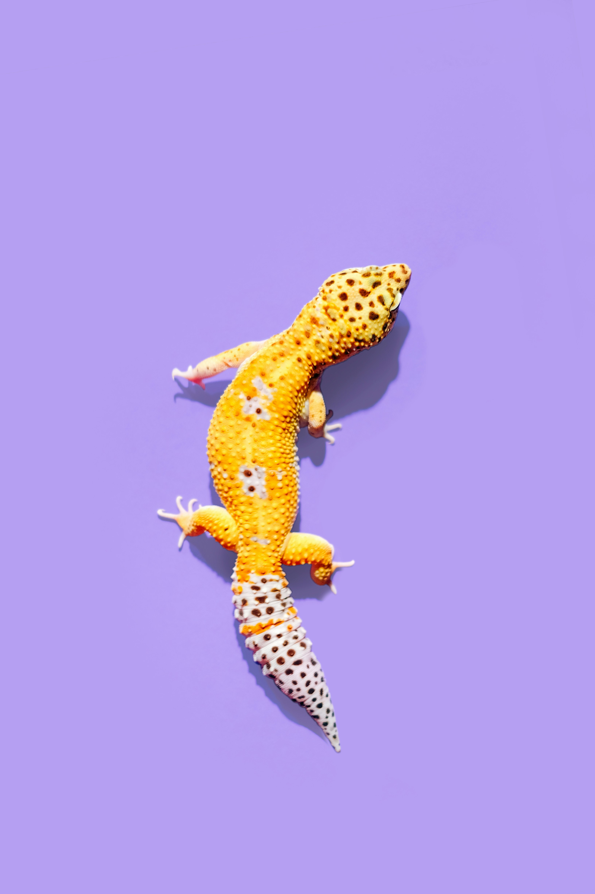

REPTILE
Result
ヘビ・トカゲタイプ
光と温度を選ぶ静かな専門家
静かに環境を読み、自分に合う場所を選ぶ観察派です。
でも、知ってほしいこと
動かないから平気、ということではありません。温度、光、隠れ場所を選べないことは大きな負担です。
自然では
隠れる、温まる、冷ます、日光浴をする、湿度を選ぶ行動をします。
カフェでは
温度勾配、紫外線、隠れ場所、床材、頻繁なハンドリングが課題になります。

Result
静かに環境を読み、自分に合う場所を選ぶ観察派です。
動かないから平気、ということではありません。温度、光、隠れ場所を選べないことは大きな負担です。
隠れる、温まる、冷ます、日光浴をする、湿度を選ぶ行動をします。
温度勾配、紫外線、隠れ場所、床材、頻繁なハンドリングが課題になります。
福祉
温かい場所、涼しい場所、隠れる場所、湿度、光を自分で選べることが重要です。
取引
種名、由来、飼養環境を説明できる施設かどうかが重要です。
保全
一部の種ではペット需要や生息地の変化が保全上の課題になります。
感染症
サルモネラ属菌を保有することがあります。接触後の手洗いが必要です。